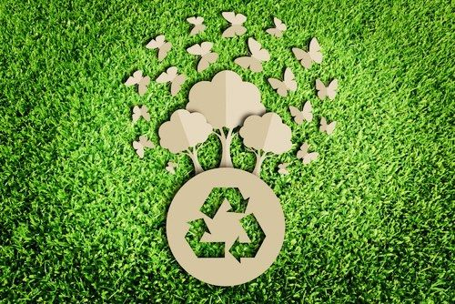

Japón ha superado sus metas nacionales de reciclaje con una tasa del 83% en 2017. Este nivel es significativamente más alto que el 40% de la Unión Europea y el 20% de Estados Unidos, posicionando a Japón como referente global en la gestión de residuos.
